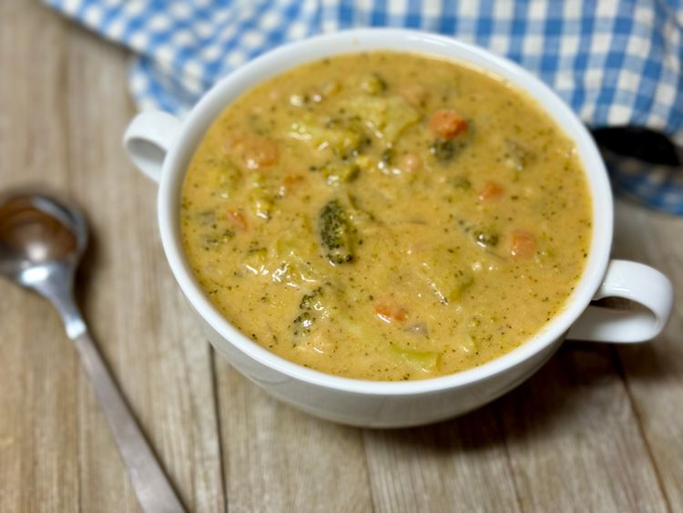

Lasagna

DESCRIPTION
This creamy high protein broccoli Cheddar soup is packed full of veggies and gets its
creaminess—and extra protein—from beans and cottage cheese.
The soup is partially blended for a nice, thick base.
INGREDIENTS
- Butter
- Onion
- Carrots
- Garlic
- Broccoli
- Chicken broth
- Cottage Cheese
STEPS
- Melt butter in a large stockpot over medium heat. Add onion, carrot, and celery. Cook for 8 minutes.
Add garlic and cook 2 minutes more. Add beans, broth, broccoli, paprika, salt, and pepper.
- Turn heat off; ladle about 1 1/2 cups of soup into a blender.
- Add cottage cheese to blender; blend until smooth.
- Add Cheddar cheese and stir until melted and soup is thickened.
Home